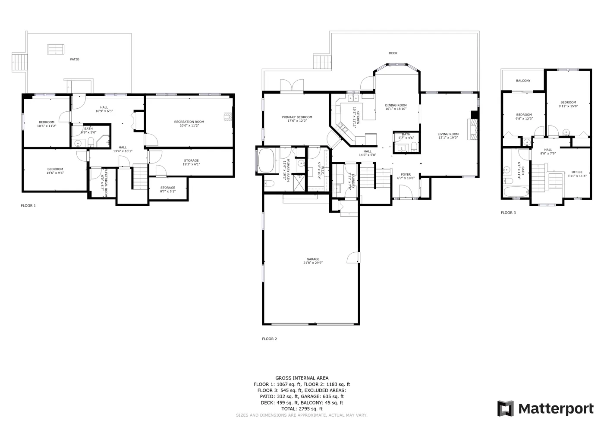
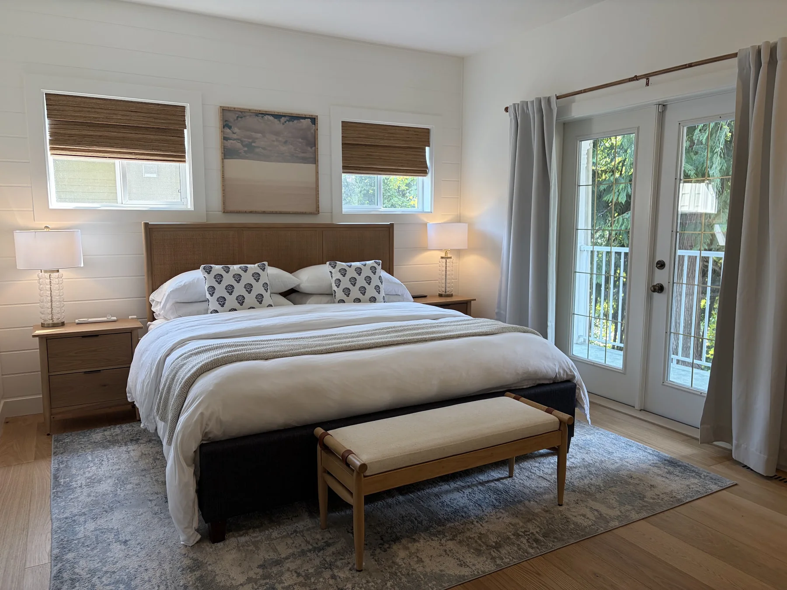
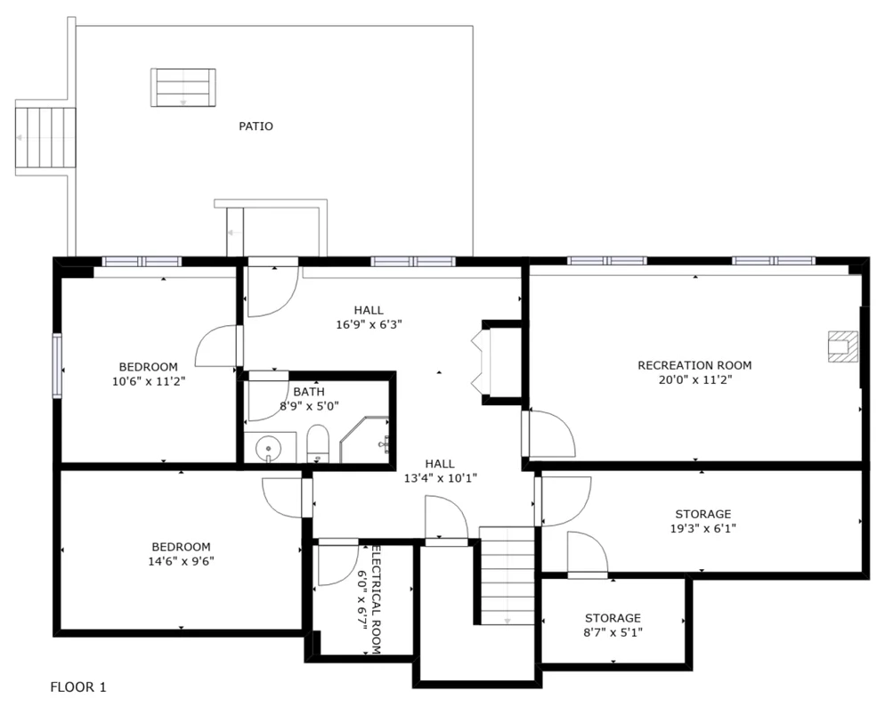

Furnished quiet-season tenancy · North Shuswap
STAY FOR THE
QUIET SEASON.
A three-level house tour for a calm fall, winter and spring by Shuswap Lake.
BEGIN THE HOUSE TOUR ↓Furnished quiet-season tenancy · North Shuswap


Alternate views stay grouped by room, so the tour never overstates the house.
THE QUIET SEASON
Cooler trails, changing colour and the Adams River salmon season—an unhurried shoulder season that deserves more than a weekend.
Explore North Shuswap ↗A quieter lake, room to work, and a furnished base for slow mornings, local walks and days at home.
See local experiences ↗Waterfalls build, trails reopen and long light returns. The landscape changes before the summer crowds arrive.
Find a trail ↗THE COMPLETE PROPERTY SET
Several photographs are alternate exposures of the same room or view. They remain here deliberately, grouped and numbered, so you can judge the house from the complete supplied set.
ORIGINAL MATTERPORT MLS PLAN

THE NORTH SHUSWAP AROUND YOU
The map uses an approximate Blake Point area marker rather than the house’s precise location. Select a place to locate it; follow the source link for current conditions and seasonal access.
A GOOD RESIDENTIAL FIT
08 · EXPRESSION OF INTEREST
The current working range is $3,000–$3,200 per month. Start with a short fit check; it prepares an email in your own mail app, and nothing is stored by this preview site.
Furnished · internet included · hydro and propane extra · final deposit, pet and utility terms confirmed before agreement.